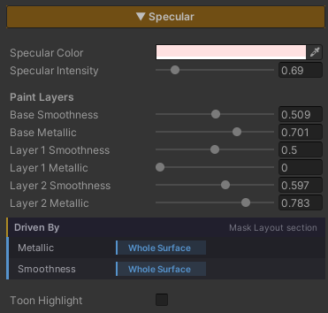

Specular & Metallic
Control how glossy a surface is and whether it is metal — polished stone with a highlight sweeping across it, a steel pipe reflecting in its own brass colour, or a plain plaster wall that reflects nothing at all.
Both live in one feature because they answer the same question — how does light bounce off this surface. In the shader itself they sit in the same Specular block, not in separate places.
The highlight is GGX, the same one URP Lit uses, calibrated so that Specular Intensity 1 matches a standard URP Lit surface. You start from a physically correct base and push toward a stylized look from there, rather than the other way round.
Showcase Specular & Metallic
Setup
Turn on the Specular feature in the Features grid at the top of the Inspector and the Specular section appears with everything below in it, Metallic included.
It ships off, and while it is off these calculations are stripped out of the compiled shader.
Metallic only does anything while Specular is on. With Specular off, Metallic is forced to
0no matter where the slider sits.
Parameters

- Specular Color (default white) — the colour of the highlight, multiplied on top of the light’s own colour
- Specular Intensity (
0–5, default1) — how strong the highlight is.1matches a standard URP Lit surface; above that is deliberate exaggeration for stylized work - Smoothness (
0–1, default0.5) — how polished the surface is. Low = matte, a wide faint highlight. High = polished, a small sharp one - Metallic (
0–1, default0) —0= an ordinary surface with a white highlight.1= metal
What Metallic Actually Changes
This is not just a gloss dial. It changes three things about the surface at once, following URP’s Metallic workflow :
| Part | As Metallic goes toward 1 |
|---|---|
| The highlight | shifts from white to the Albedo’s own colour (brass gets a gold highlight) |
| The reflection | is tinted the same way, from both the Probe and Planar Reflection |
| The diffuse body | falls away almost entirely |
That last one surprises people, but it is correct — a metal’s colour lives in its reflections, not in its diffuse. If you push Metallic to 1 and the object turns black, the scene has nothing for it to reflect; the settings are not wrong.
Metallic needs a scene with something to reflect. If you are making metal, keep a Reflection Probe in the scene, or turn on Planar Reflection alongside it.
Toon Highlight
A toggle at the very bottom of the section. It ships off, which gives the soft, physically-grounded GGX highlight. Turning it on blends toward a hard-edged anime highlight and reveals two sliders.
- Step (
0–1, default0) — how hard the edge gets.0= still soft,1= a full anime step. It narrows the edge and blends in more of the stylized shape at the same time - Threshold (
0–1, default0.5) — where that edge falls along the highlight’s curve, which is what decides whether the highlight reads large or small
It sits at the bottom because it is a styling accent for hero props, not part of everyday surface setup. Most environment surfaces should stay on GGX.
Feature Mask — Per-Pixel Control
The Smoothness and Metallic sliders apply to the whole surface evenly. When you want only part of a surface to be glossy or metal, wire it to the Feature Mask.
The system uses a single RGBA texture as the mask bank for the base surface, with each channel (R/G/B/A) holding one feature’s mask. You choose which feature reads which channel in the Mask Layout section, and the mask tiles with the Albedo.
Both Metallic and Smoothness default to None, meaning they are not wired to a channel yet and the sliders apply across the whole surface as normal.
Underneath the two sliders is a strip reporting which of them a mask is currently driving — it exists so a slider that appears to do nothing explains itself.
Mask values multiply the slider rather than replacing it. If the slider is
0, a fully white mask still gives you0.
When no feature uses the mask at all, the shader does not sample that texture. This is managed for you; there is nothing to strip out by hand.
Works With Other Features
Reflection
Reflection Probe lighting is not exclusive to the Reflection feature — turning on Specular alone already gives you probe reflections, scaled by Smoothness.
With both Specular and Reflection off, the surface stays fully matte and picks up no environment gloss at all, matching how a low-smoothness URP surface behaves.
Pixels with very low Smoothness skip the probe sample entirely, for free.
For a true mirror image you also need Planar Reflection.
Paint Mode
With Paint Mode on this section changes shape. Smoothness and Metallic move under a Paint Layers heading and are renamed Base Smoothness and Base Metallic, followed by Layer N Smoothness and Layer N Metallic for every active layer.
That makes the base surface and the painted layers read as one set — painted water glossy, the grass beside it matte, a steel plate metal, all inside a single material.
Specular Color and Specular Intensity stay shared across the material, not split per layer.
Every layer’s Metallic starts at 0, which keeps the natural reading — dirt painted over a steel floor is dirt, until the layer says otherwise.
Normal Map
The highlight reads the surface direction after the Normal Map has bent it, so it travels across the relief on its own. See Normal Map.
Surface Accumulation
Snow or dust settling on a surface pulls Smoothness toward its own value by how thickly it has gathered, so a covered area takes on the gloss of what is lying on it rather than staying at the gloss of the surface underneath.
Limits
- Metallic does nothing while Specular is off — the value is forced to
0 - Metallic with nothing to reflect goes black. The scene needs a Reflection Probe or Planar Reflection
- A masked Smoothness only applies while Specular is on. With Reflection on but Specular off, the probe reflection uses the raw Smoothness slider without the mask
- Masks multiply, they do not replace. A slider left at
0stays0 - There is one Feature Mask bank. The base surface uses a single RGBA texture, so at most 4 features can be wired at once